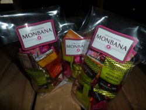
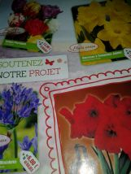

Nos précédentes actions
Année 2014 - 2015
Fête de l'école
Samedi 13 avril
L'école en fête pour cette traditionnelle journée, avec spectacles des enfants le matin, et kermesse l'après-midi.
Votre aide est la bienvenue pour nous aider, inscrivez vous ici
Commande de fournitures scolaires
Cette année encore, l'APE propose des commandes groupées de fournitures scolaires, en collaboration avec les enseignants de l'école.
Les commandes seront livrées le 30 juin lors du pique-nique de l'école.
Chasse aux oeufs
Samedi 04 avril de 10h à midi
Chasse aux oeufs de l'APE
3 parcours dans chevaigné, des CDs à trouver, des oeufs en chocolat à manger, et des lots à gagner.
Repas de mars
Le repas de mars a eu lieu le samedi 21 mars.
Dans une ambiance asiatique, Arécia et Pierre ont effectué un spectacle musical.
Chocolats de noël
Cette année, Sophie relance la vente de petits ballotins gourmands, avec la complicité des chocolats MontBana.
Nous proposons des sachets (3€ le sachet) de 20 pièces à déguster (10 carrés de chocolats Noir & Lait aux multiples saveurs et 10 gourmandises (amandes, pralines).
Les ventes autont lieu :
- le vendredi 5/12 de 16h45 à 18h
- le mardi 9/12 de 16h45 à 18h
- le vendredi 12/12 16h45 à 18h

Gouter de noël
L'APE organise avec l'équipe enseignante et le personnel de la cantine le gouter de noël des enfants.
Le gouter aura lieu l'après-midi du mardi 16 décembre.

Vente de sapins de noël
L'APE organise une vente de sapins de noël, en association avec un pépiniériste de Betton.
La livraison des sapins se fera le vendredi 12 décembre à partir de 16h45 devant l'école.
{kind=link}
Vente de bulbes
L'APE organise une vente de bulbes et autres graines de fleurs, des mots ont étés distribués dans les cahiers.
Les bons de commandes sont à retourner pour le 06 novembre.
La livraison des bulbes devrait s'est faite tout début décembre.

Vente de calendriers
Cette année l'APE organise une vente de calendriers familiaux, édités par l'association des Korrigans de Saint Médard sur Ille.
Ils sont vendus au prix de 6€ et seront distribués devant l'école le vendredi 26 septembre devant l'école.
Il reste quelques calendriers, contactez l'APE si vous en avez réservé ou si vous voulez en acheter.

Fournitures scolaires
Pour la deuxième année consécutive, l'APE (et surtout Jérôme) a organisé avec l'équipe enseignante les listes de fournitures scolaires pour la rentrée, et à proposé aux parents de commander à prix réduit des fournitures de qualité, préparées et livrées par l'APE.
C'est cette année une trentaine de familles qui a bénéficié de cette action.
L'ensemble des membres de l'A.P.E. Jules Verne remercie tous les parents qui ont pu donner de leur temps pour les aider, ainsi que l'équipe enseignante, pour sa disponibilité.
Année 2013 - 2014
Fête et pique nique de fin d'année
La kermesse de l'école s'est tenue le 14 juin 2014, avec les spectacles des enfants, et les traditionnels stands dans la salle des sports.
L'ensemble des membres de l'A.P.E. Jules Verne remercie tous les parents qui ont pu donner de leur temps pour les aider, ainsi que l'équipe enseignante, pour sa disponibilité.
Chasse aux oeufs
Le 19 avril 2014, les enfants de Chevaigné ont pu participer à une chasse aux oeufs, organisée par l'APE.
Trois itinéraires plus ou moins long avaient été élaborés par Sinje Stark.
Le long de ces parcours, des CDs avaient étés cachés. Les enfants devaient alors pointer sur un plan les CDs découverts lors du trajet afin de gagner un oeuf en chocolat.
La chasse s'est achevée par un tirage au sort permettant à quelques veinards de gagner de gros lots...en chocolat bien sûr!

Dîner Spectacle du printemps 2014 de l'APE Jules Verne
C'est le samedi 29 mars que l'association des parents d'élèves a donné rendez vous aux familles et aux enseignants pour le traditionnel dîner spectacle du mois de mars.
Cette année, c'est un repas réunionnais que nous avons confectionné grâce à Sophie Leibovitsch, pour le plus grand plaisir de tous. La classe de CM1 a présenté une danse, des contes Tsiganes ont été racontés par Jean-François Michau, accompagné à l'accordéon par Yann Fanch Perroches. Et c'est avec le concours de quatre parents musiciens, Gérald, Pierre, Gwénael et Christophe, que la soirée a pu s'achever sur des airs de musique bretonne.
L'ensemble des membres de l'A.P.E. Jules Verne remercie tous les parents qui ont pu donner de leur temps pour les aider, ainsi que l'équipe enseignante, pour sa disponibilité.